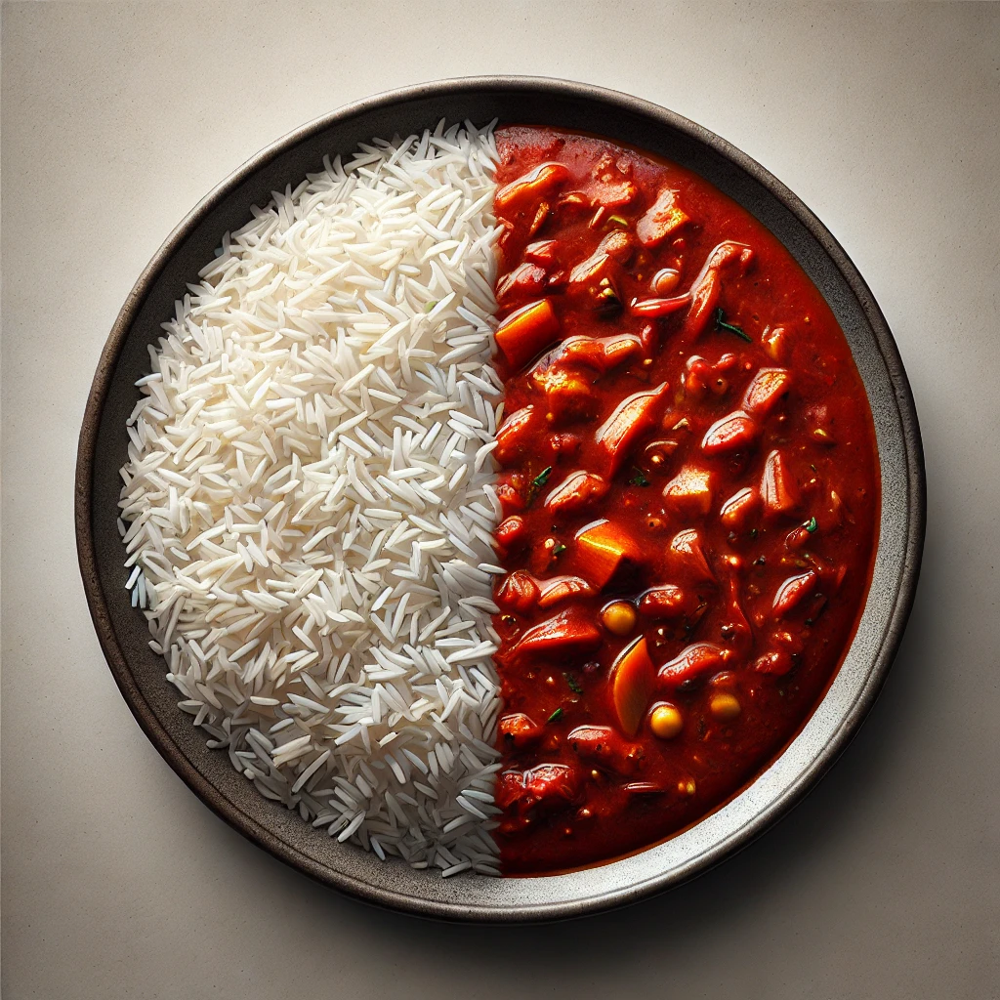

Veggie Masala

A delicious healthy creamy dish
Veggie Masala is a vegetarian alternative to the famous Chicken Masala,
has all of the taste, with none of the meat
Ingredients:
The sauce:
- 3 medium onions
- 2tbsp garlic paste
- 5 medium tomatoes
- 1tbsp tomatoe paste
- 1tbsp sugar
- 1tbsp Ginger paste
- Apple cider vinegar
- 50gr of Butter
- 1L water
- Optional: 1 bell pepper
Spices:
- Bayleaves
- Oregano
- Masala mix
- Dried mint
- Smoked paprika
- Kurry
- Chili
The rice:
- 1 Cup of rice
- 2 Cups of water
- 1 Anis flower
The cream:
- Cashew nuts -to taste
- Heavy cream
Steps to follow:
-
The rice:
- Properly rinse the rice multiple times
- After rinsing your rice multiple times, put in the pot and with the water and let it sink, and add your anis flower
- when your sauce will be simmering, turn the heat on the rice pot, all the way up, until it starts boiling, then turn it to low heat
- when you notice that there is no liquid anymore, set it aside and let it rest
-
The sauce:
- Pre-heat a nice pan, that you drizzeled with enough olive oil
- Roughly cutting the onions and putting them on the pan. The shape won't matter because we will blend everyting later
- Add in the garlic and the ginger pastes
- In the same fashion add the tomatoes and tomatoe paste
- Let everything sear nicely until golden brown
- Now you can add the sugar, remember to add salt to taste
- At this stage, you can throw in all the spices except the mint, which we will keep for the presentation
- Let everything fry on a medium-high heat, then add the vinegar, after which you should add the water and let it simmer nicely for about 40mn
- While everything is simmering you should remember start your rice, and to move to preparing the cream, you can come back here afterwards
- At this stage, your rice is ready, and so is the cream. After everything is nice and mushy, turn off the heat, and remove the bayleaves
- Transfer everything to a big bowl that can stand very warm liquides
- Use your hand mixer or blender to turn everything into a nice and smooth liquid
- With the help of a sieve, pour the filtered and smoother liquid back in the pan, and add the butter
- You can also add the bayleaves back, and make sure your thick sauce is nicely mixed with the butter
- now you can add your cream and crush the dried mint in your palm over the pan
-
The cream:
- In a blender add: your heavy cream and cashews. Some people like to leave their cashew in water so they are softer, not me!
- Process everything until very smooth
- Drizzle in your sauce pot at the end
-
Presentation:
- In a deep dish pour your self some rice
- Add your sauce to your liking
- Add more crushed dried mint, and some of the cream to your liking
- Enjoy!
Return to main page